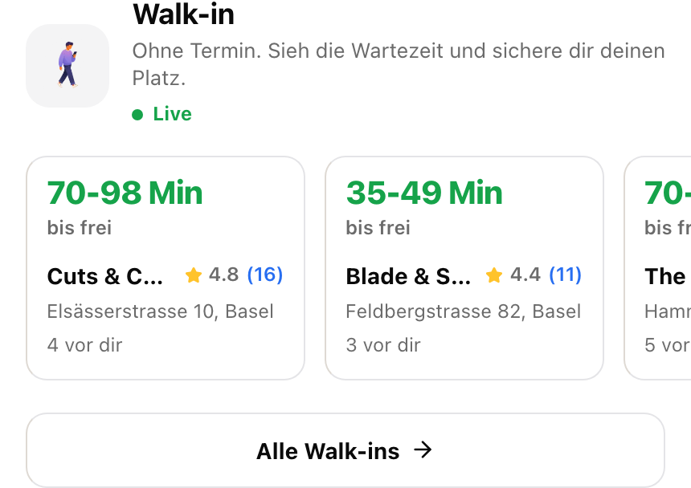
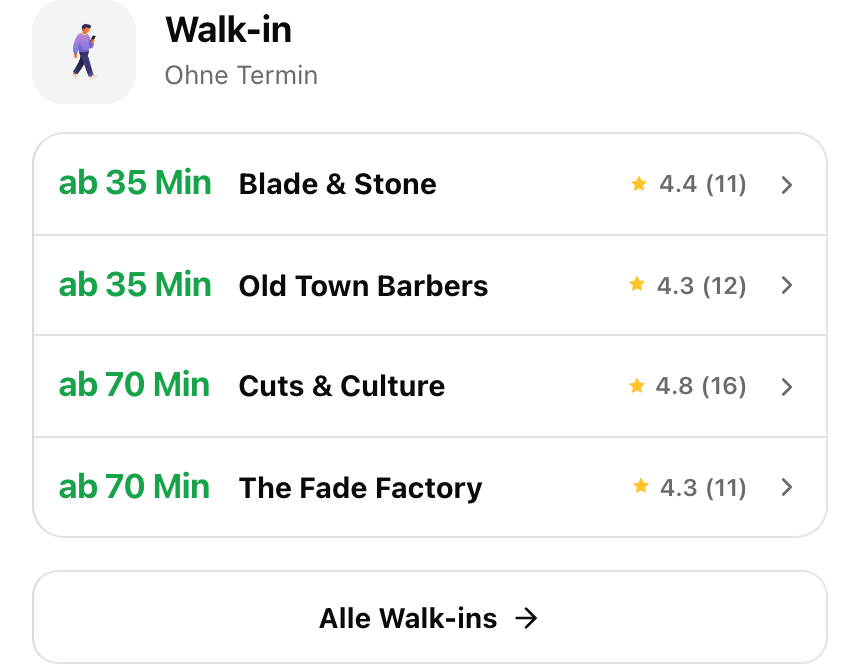
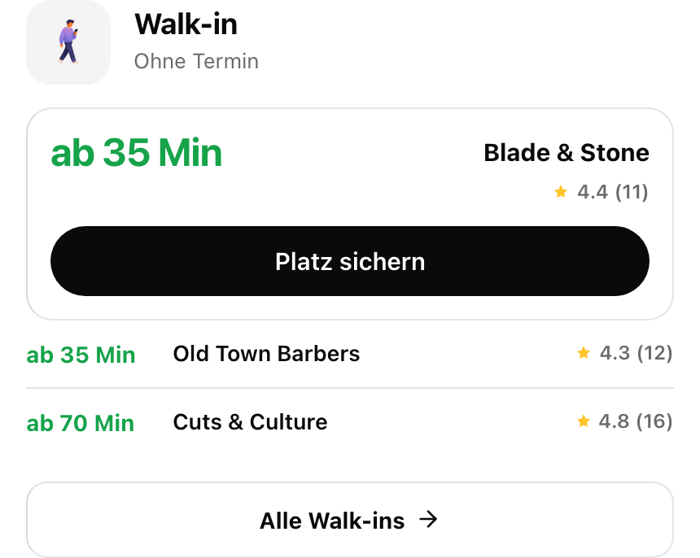

Every panel is a real capture of the running homepage, not a drawing. The two treatments are that same live band with only the design changed on the live DOM, so what you are judging is your actual component with real fonts, tokens and live data. 7 pieces per row became 3: the queue is what causes the wait, so "3 vor dir" and "ab 35 Min" were one fact told twice; the street address does not pick a barber; the label, explainer and Live pip were padding.

Worst wait leads (70-98 before 35-49), a 28 minute spread shouting in green, the address truncates, and a decorative Live pip.

Sorted, stripped. One green column you read straight down: 35, 35, 70, 70. Wait, name, rating. Nothing truncates, nothing repeats, and the soonest shop is the first thing you see.

One decision. The soonest shop takes the ink CTA (walk-in is pay to hold your number); the rest stay one tap away. More committal, one extra element.